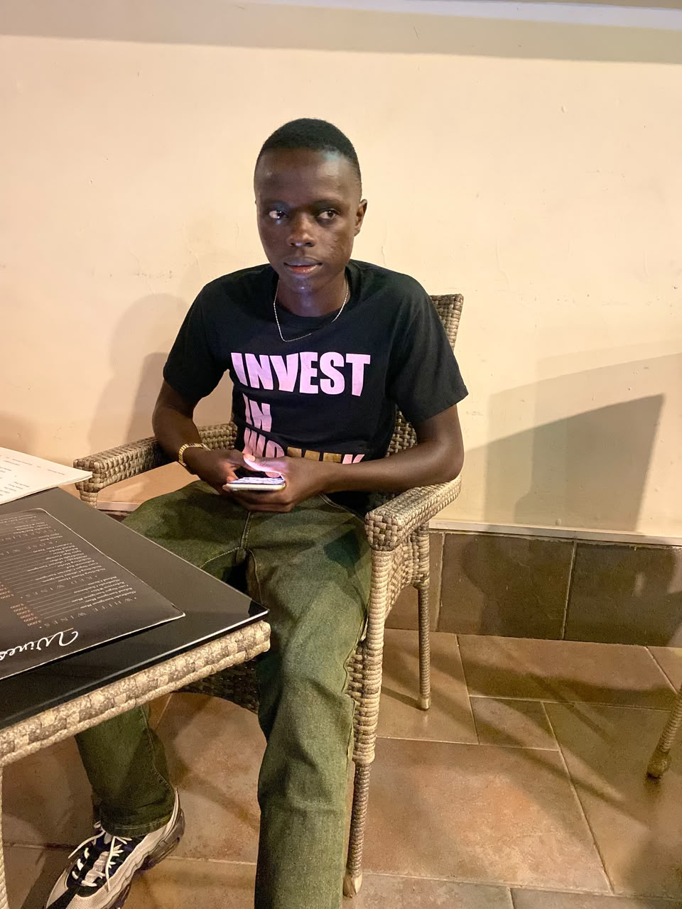

My name is Patrick Byron. I am a student at Kisii University pursuing a Bachelor of Information Technology, reg:IN17/00088/25. I am interested in Information Technology, computer systems, web development and cybersecurity.
I chose this course because I have an interest in technology and I want to develop practical skills that can help me build useful solutions using computers and the internet.
My background has taught me the importance of hard work, discipline and consistency. During my time at university, I hope to improve my technical knowledge and gain practical experience in the field of Information Technology.
After completing my course, I hope to work in the technology industry, particularly in areas such as web development, cybersecurity and information systems. I also hope to use my skills to create my own technology-based projects and businesses.